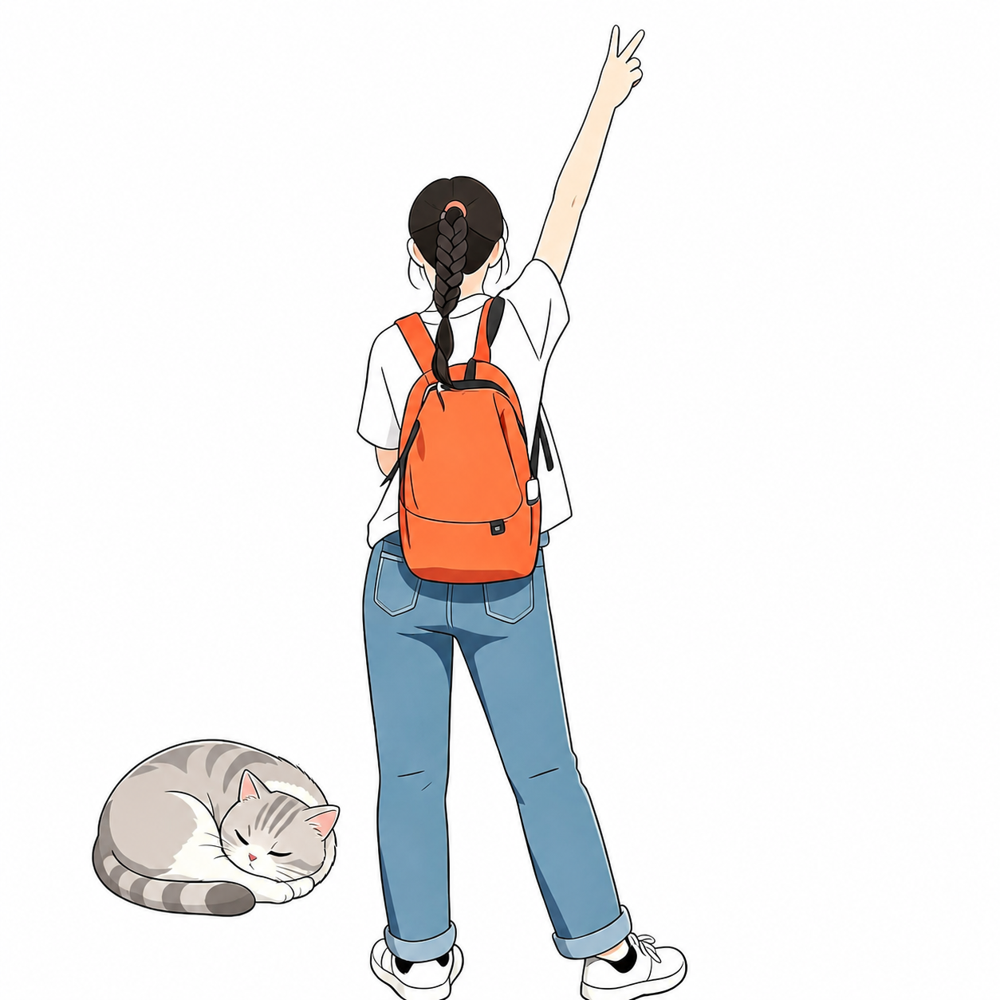

糖糖和糖豆
透镜虚拟实验室
拖动器材，像做真实实验一样探索成像规律
凸透镜
凹透镜
↻ 重置实验
📖 知识讲解
↔ 拖动物体、透镜或光屏；双击光屏可自动对焦
实像、倒立、缩小
光屏未对焦
光线
边缘光线
主要光线
多光线
无光线
曲率半径 R
◀
20 cm
▶
折射率 n
◀
1.50
▶
中心厚度 d
◀
4.0 cm
▶
透镜口径 D
◀
58 cm
▶
物体高度 h
◀
18 cm
▶
物距 u
◀
45 cm
▶
光屏位置 s
◀
36 cm
▶
将光屏移到清晰像处
显示与结果
焦点 F 与 2F
虚光线延长线
标注距离
等效焦距 f
+20.7 cm
像距 v
36.0 cm
放大率 m
−0.80
光屏
未对焦